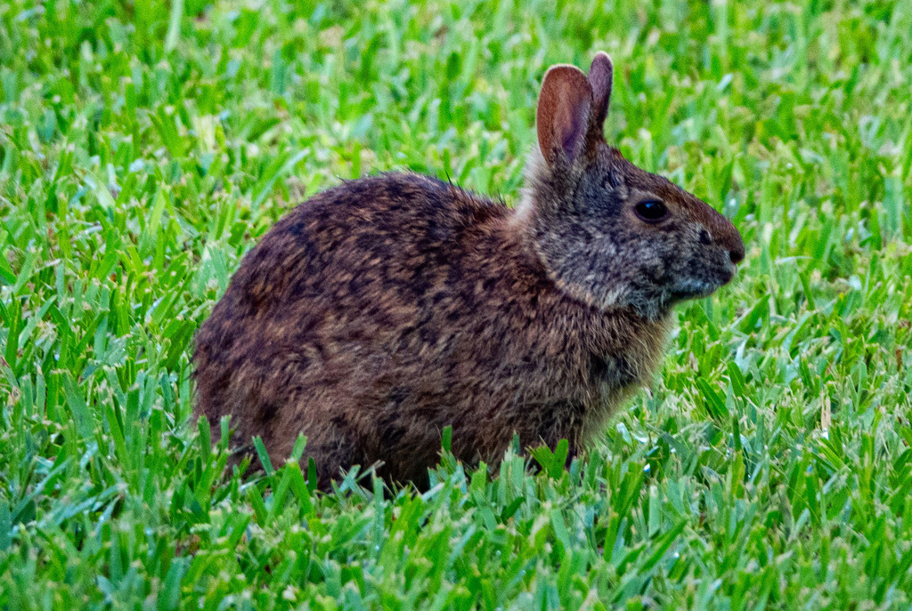

Sylvilagus palustris
Leporidae
📷 Photo by Rob Carr · CC-BY-NC · via iNaturalist · 📅 Jun 14, 2026
Quick Hits
- A small, dark rabbit with short ears and a tiny brownish tail — not the long-eared cottontail most people picture when they hear 'rabbit.'
- It is one of the very few rabbits that swims, and it does so willingly — wading into water to escape predators or to reach better feeding areas.
- Unlike cottontails, the marsh rabbit's tail is not white and fluffy — it is small, brown, and inconspicuous.
- It is a true Florida native, tied to the state's wetlands, marshes, and dense, damp vegetation.
How to Spot It
Size
Small — smaller than a cottontail, about 14 to 16 inches.
Ears
Short for a rabbit.
Tail
Small, brown — not the white 'cotton ball' of a cottontail.
Color
Dark brown to blackish-brown, darker than a cottontail.
Voice
Generally silent; may let out a high squeal if captured.
What to Look For
A small, dark rabbit near water with short ears and no white tail. If it runs toward water instead of away, it is a marsh rabbit.
What It Eats
Grasses, sedges, aquatic plants, and other low vegetation — a strict herbivore.
Where & When
Where in the park
Along pond edges and in dense low vegetation, especially at dawn or dusk.
When to see it
Year-round resident, most visible at dawn and dusk.
Watching It Respectfully
Observe and enjoy.
Photo Gallery
Photos contributed by park visitors and volunteers via iNaturalist

📷 Lilah Thomas
📅 Aug 5, 2026
Also Known As
Marsh HareBluetail
Photo Credits
- © Rob Carr (CC-BY-NC), via iNaturalist
- © Lilah Thomas (CC-BY-NC), via iNaturalist